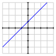

At its heart, the subject of linear algebra is about linear equations and, more specifically, sets of two or more linear equations. Google routinely deals with a set of trillions of equations each of which has trillions of unknowns. We will eventually understand how to deal with that kind of complexity. To begin, however, we will look at a more familiar situation in which there are a small number of equations and a small number of unknowns. In spite of its relative simplicity, this situation is rich enough to demonstrate some fundamental concepts that will motivate much of our exploration.
Subsection2.1.1Some simple examples
Activity2.1.1.
In this activity, we consider sets of linear equations having just two unknowns. In this case, we can graph the solutions sets for the equations, which allows us to visualize different types of behavior.
On the grid below, graph the lines
\begin{equation*}
\begin{aligned}
y \amp = x+1 \\
y \amp = 2x-1\text{.} \\
\end{aligned}
\end{equation*}
At what point or points \((x,y)\text{,}\) do the lines intersect? How many points \((x,y)\) satisfy both equations?
On the grid below, graph the lines
\begin{equation*}
\begin{aligned}
y \amp = x+1 \\
y \amp = x-1\text{.} \\
\end{aligned}
\end{equation*}
At what point or points \((x,y)\text{,}\) do the lines intersect? How many points \((x,y)\) satisfy both equations?
On the grid below, graph the line
\begin{equation*}
y = x+1\text{.}
\end{equation*}
How many points \((x,y)\) satisfy this equation?
On the grid below, graph the lines
\begin{equation*}
\begin{aligned}
y \amp = x+1 \\
y \amp = 2x-1 \\
y \amp = -x. \\
\end{aligned}
\end{equation*}
At what point or points \((x,y)\text{,}\) do the lines intersect? How many points \((x,y)\) satisfy all three equations?
The graph of the two lines is as shown on the right. There is a single point, the point \((2,3)\text{,}\) at which the lines intersect. Therefore, there is a single point that satisfies both equations.
These two lines are parallel, which means there is no point at which the lines intersect. Therefore, there is no point that satisfies both equations.
There are infinitely many points that lie on this line and that, therefore, satisfy this single equation.

These three lines do not have a common intersection point. Consequently, there is no point satisfying all three equations.
The examples in this introductory activity demonstrate several possible outcomes for the solutions to a set of linear equations. Notice that we are interested in points that satisfy each equation in the set and that these are seen as intersection points of the lines. Similar to the examples considered in the activity, three types of outcomes are seen in Figure 2.1.1.
Figure2.1.1.Three possible graphs for sets of linear equations in two unknowns.
In this figure, we see that
With a single equation, there are infinitely many points \((x,y)\) satisfying that equation.
Adding a second equation adds another condition we place on the points \((x,y)\) resulting in a single point that satisfies both equations.
Adding a third equation adds a third condition on the points \((x,y)\text{,}\) and there is no point that satisfies all three equations.
Generally speaking, a single equation will have many solutions, in fact, infinitely many. As we add equations, we add conditions which lead, in a sense we will make precise later, to a smaller number of solutions. Eventually, we have too many equations and find there are no points that satisfy all of them.
This example illustrates a general principle to which we will frequently return.
Solutions to sets of linear equations.
Given a set of linear equations, there are either:
infinitely many points,
exactly one point, or
no points
that satisfy every equation in the set.
Notice that we can see a bit more. In Figure 2.1.1, we are looking at equations in two unknowns. Here we see that
One equation has infinitely solutions.
Two equations have exactly one solution.
Three equations have no solutions.
It seems reasonable to wonder if the number of solutions depends on whether the number of equations is less than, equal to, or greater than the number of unknowns. Of course, one of the examples in the activity shows that there are exceptions to this simple rule, as seen in Figure 2.1.2. For instance, two equations in two unknowns may correspond to parallel lines so that the set of equations has no solutions. It may also happen that a set of three equations in two unknowns has a single solution. However, it seems safe to think that the more equations we have, the smaller the set of solutions will be.
Figure2.1.2.A set of two equations in two unknowns can have no solutions, and a set of three equations can have one solution.
Let’s also consider some examples of equations having three unknowns, which we call \(x\text{,}\)\(y\text{,}\) and \(z\text{.}\) Just as solutions to linear equations in two unknowns formed straight lines, solutions to linear equations in three unknowns form planes.
When we consider an equation in three unknowns graphically, we need to add a third coordinate axis, as shown in Figure 2.1.3.
Figure2.1.3.Coordinate systems in two and three dimensions.
As shown in Figure 2.1.4, a linear equation in two unknowns, such as \(y=0\text{,}\) is a line while a linear equation in three unknowns, such as \(z=0\text{,}\) is a plane.
Figure2.1.4.The solutions to the equation \(y=0\) in two dimensions and \(z=0\) in three.
In three unknowns, the set of solutions to one linear equation forms a plane. The set of solutions to a pair of linear equations is seen graphically as the intersection of the two planes. As in Figure 2.1.5, we typically expect this intersection to be a line.
Figure2.1.5.A single plane and the intersection of two planes.
When we add a third equation, we are looking for the intersection of three planes, which we expect to form a point, as in the left of Figure 2.1.6. However, in certain special cases, it may happen that there are no solutions, as seen on the right.
Figure2.1.6.Two examples showing the intersections of three planes.
Activity2.1.2.
This activity considers sets of equations having three unknowns. In this case, we know that the solutions of a single equation form a plane. If it helps with visualization, consider using \(3\times5\)-inch index cards to represent planes.
Is it possible that there are no solutions to two linear equations in three unknowns? Either sketch an example or state a reason why it can’t happen.
Is it possible that there is exactly one solution to two linear equations in three unknowns? Either sketch an example or state a reason why it can’t happen.
Is it possible that the solutions to four equations in three unknowns form a line? Either sketch an example or state a reason why it can’t happen.
What would you usually expect for the set of solutions to four equations in three unknowns?
Suppose we have a set of 500 linear equations in 10 unknowns. Which of the three possibilities would you expect to hold?
Suppose we have a set of 10 linear equations in 500 unknowns. Which of the three possibilities would you expect to hold?
Yes, it is possible if the two planes are parallel to one another.
No, this is not possible. Two planes will either intersect in a line, if they are not parallel, or not intersect at all, if they are parallel.
Yes, it is possible that four planes intersect in a line. One may sketch four planes that intersect in, say, the \(z\)-axis.
In general, we would expect there to be no solutions to four equations in three unknowns because there are more equations than unknowns.
Since there are more equations than unknowns, we would expect there to be no solutions. We cannot guarantee this, however.
Since there are fewer equations than unknowns, we would expect there to be infinitely many solutions. We cannot guarantee this, however.
Subsection2.1.2Systems of linear equations
Now that we have seen some simple examples, let’s agree on some terminology to help us think more precisely about sets of equations.
First, we considered a linear equation having the form
\begin{equation*}
y = 2x - 1\text{.}
\end{equation*}
It will be convenient for us to rewrite this so that all the unknowns are on one side of the equation:
\begin{equation*}
-2x + y = -1\text{.}
\end{equation*}
More generally, the equation of a line can always be expressed in the form
\begin{equation*}
ax + by = c,
\end{equation*}
which gives us the flexibility to describe all lines. For instance, vertical lines, such as \(x=3\text{,}\) may be represented in this form.
Notice that each term on the left is the product of a constant and the first power of an unknown. In the future, we will want to consider equations having many more unknowns, which we will sometimes denote as \(x_1, x_2, \ldots, x_n\text{.}\) This leads to the following definition:
Definition2.1.7.
A linear equation in the unknowns \(x_1,x_2,\ldots,x_n\) may be written in the form
We have a solution when \(x=3\) and \(z=-2\text{.}\) Therefore, \((x,y,z)=(3,0,-2)\) is a solution to the original system of equations.
Since we have found two solutions to the system of equations, we should expect that there are infinitely many. Therefore, there should be many other solutions.
Subsection2.1.3Summary
The point of this section is to build some intuition about the behavior of solutions to linear systems through consideration of some simple examples. We will develop a deeper and more precise understanding of these phenomena in our future explorations.
A linear equation is one that may be written in the form